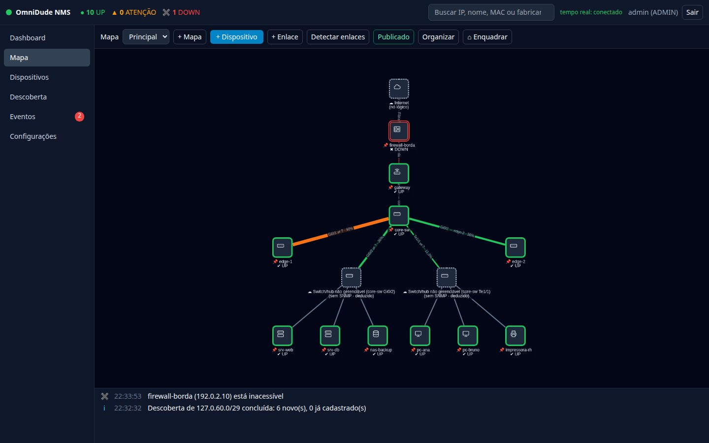

Manual do usuário e do administrador
Veja a sua rede inteira num mapa, e saiba quando algo muda.
O OmniDude NMS descobre os equipamentos, desenha a topologia, monitora serviços e tráfego e avisa quando algo cai ou volta. Roda como um único arquivo .jar, sem agentes e sem banco de dados externo.


Por onde começar#
ComeçandoInstalaçãoRequisitos, execução do jar, serviço systemd e acesso por HTTPS.
ComeçandoPrimeiros passosLogin, tour pela interface e o caminho de zero a uma rede monitorada.
UsandoDescoberta de redeVarra uma faixa de IPs e importe os equipamentos já identificados.
UsandoMapa e dispositivosPosicione nós, crie enlaces manuais e use nós lógicos para Internet e nuvem.
UsandoEventos e notificaçõesE-mail, Telegram e webhook, com regras por gravidade.
AdministraçãoUsuários, ajustes e backupPerfis, modo de manutenção, retenção e restauração.
O manual em um mapa#
Quem usa a rede no dia a dia
Leia Primeiros passos, Mapa e dispositivos, Checagens e latência e Eventos e notificações.
Quem administra o servidor
Leia Instalação, Administração, Segurança e Referência.
Quem monta a topologia
Leia Descoberta, SNMP e tráfego, Topologia e Identidade e DHCP.
Todos os capítulos#
- Introdução: conceitos e visão geral
- Instalação: jar, systemd, HTTPS
- Primeiros passos: login e tour pela interface
- Mapa e dispositivos
- Checagens e latência
- SNMP, interfaces e tráfego
- Descoberta de rede
- Topologia e enlaces
- Identidade estável com DHCP
- Eventos e notificações
- Mapa público
- Administração
- Segurança
- API REST
- Solução de problemas
- Referência e glossário
As capturas de tela deste manual vêm de uma rede de laboratório simulada (agentes SNMP falsos em 127.0.60.x). Nomes, IPs e MACs são fictícios.